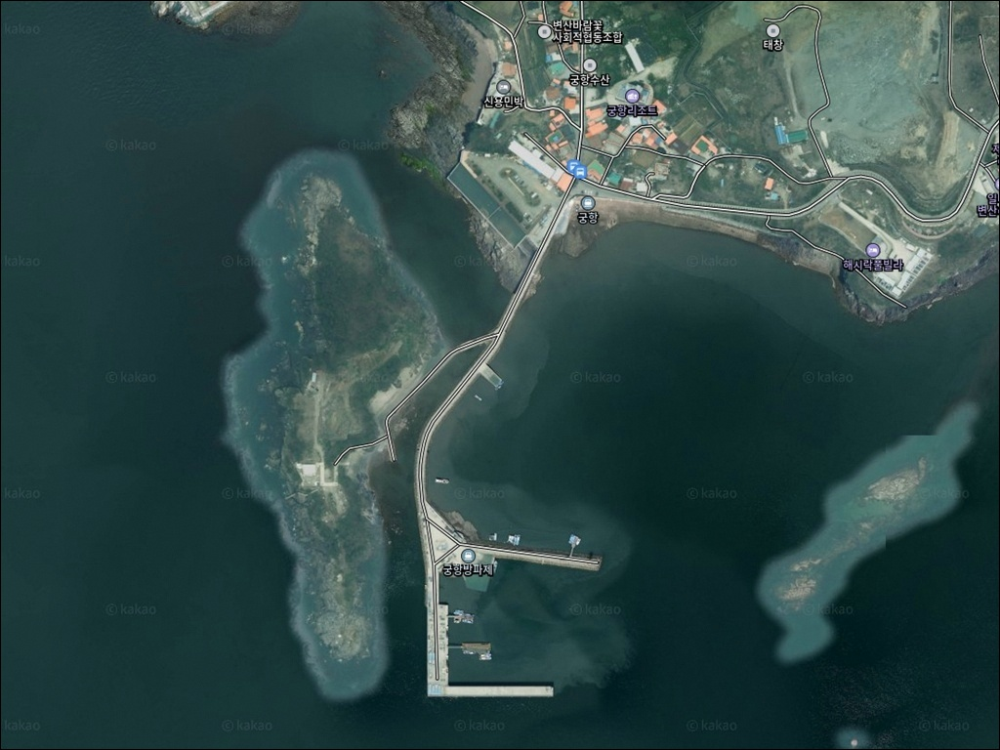
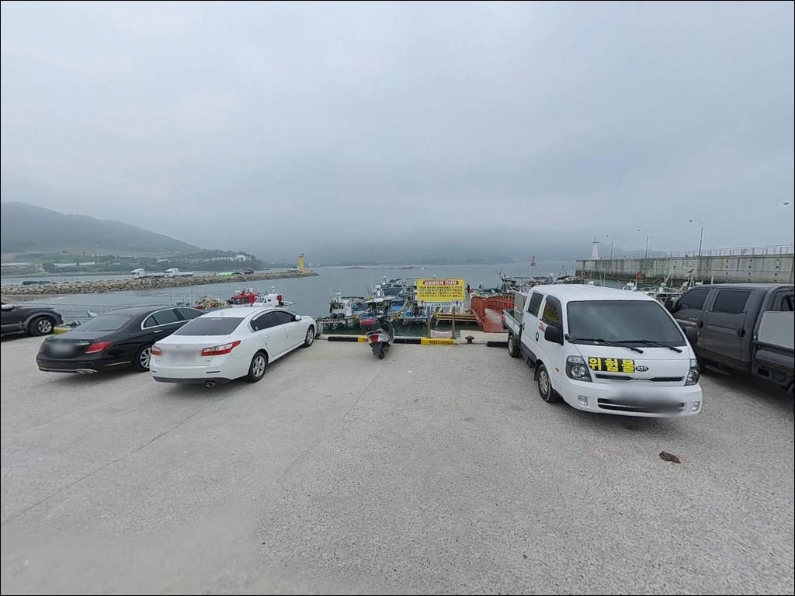
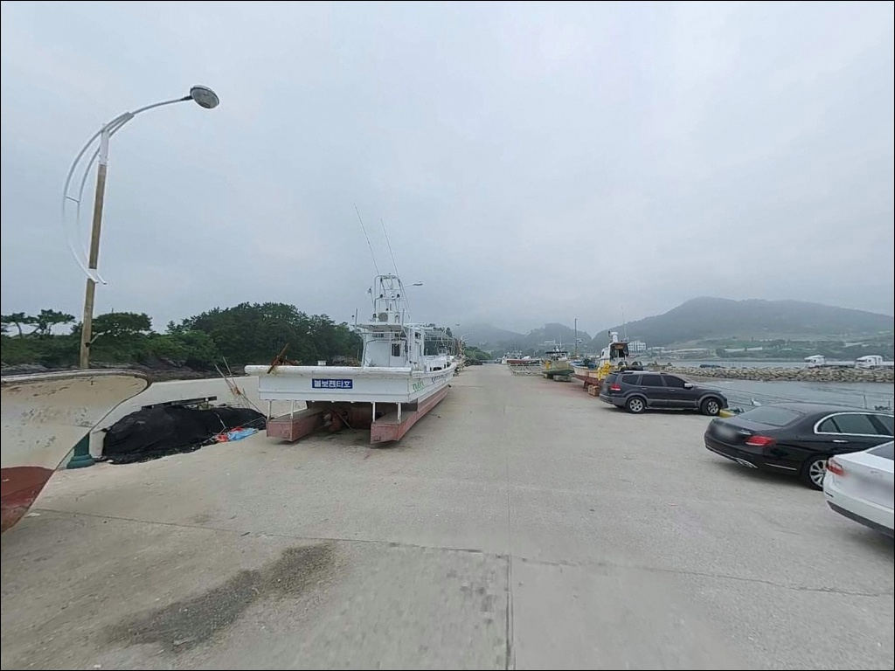
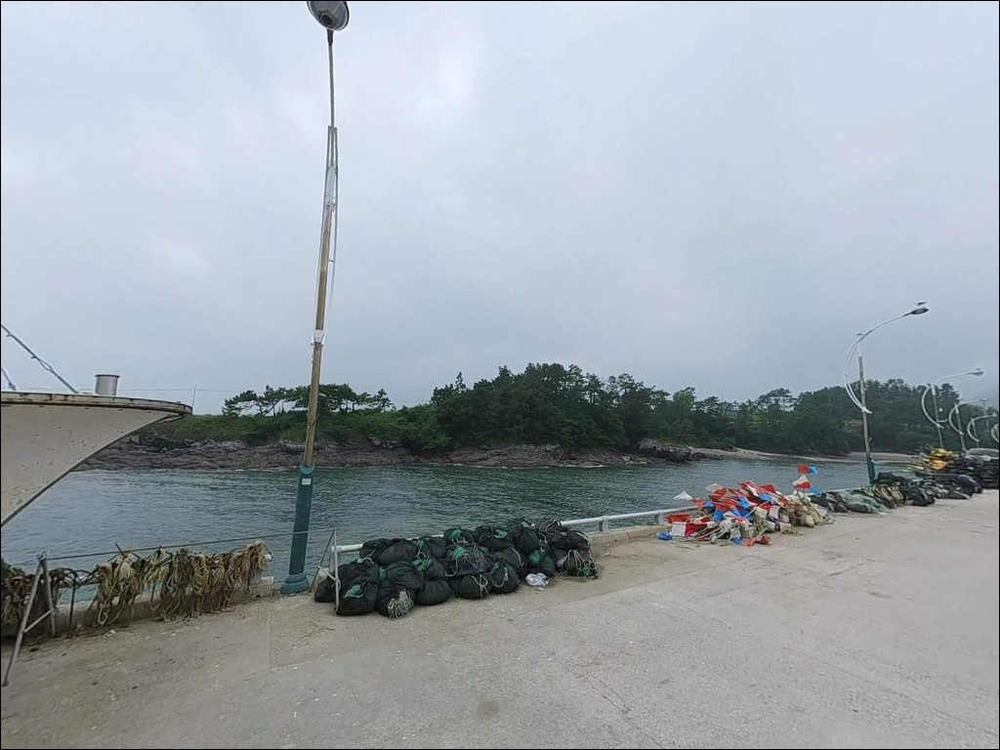
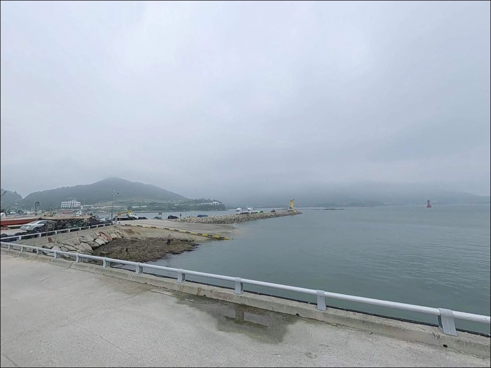
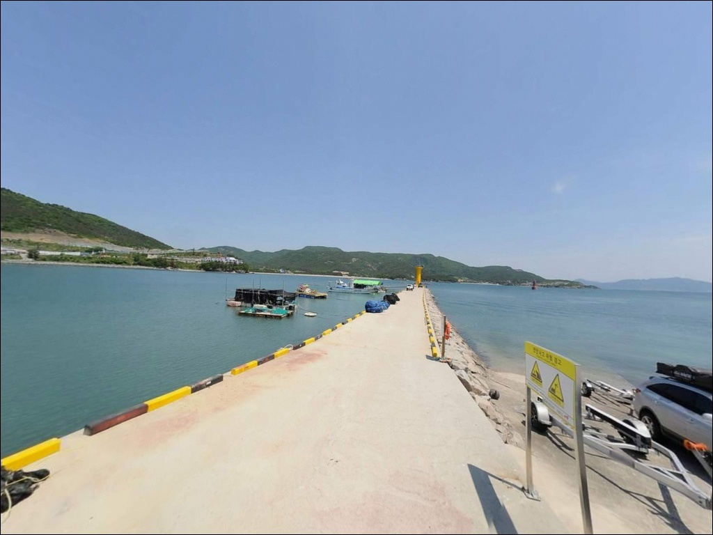
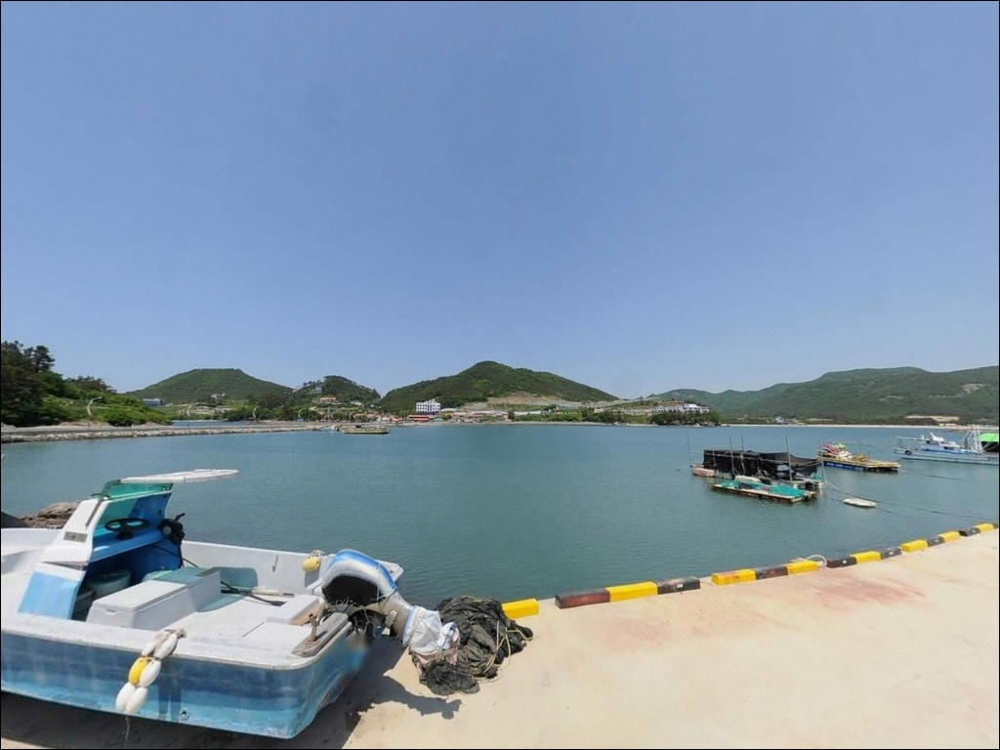
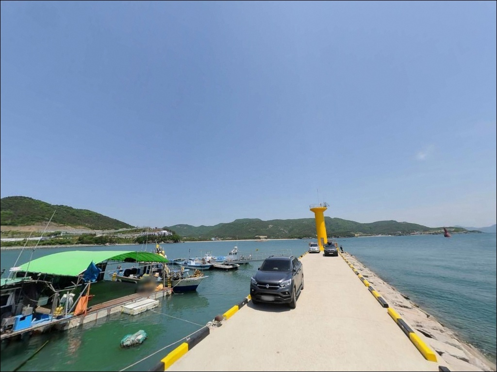
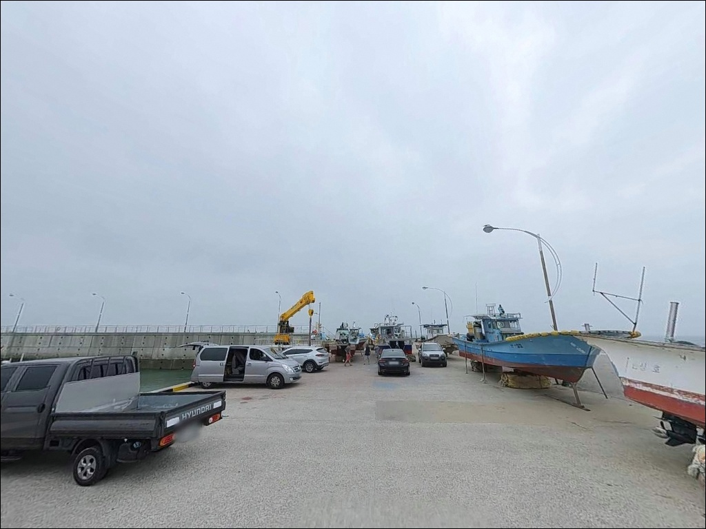

궁항, 전북 부안군 바다의 여운이 오래 남는 차박, 낚시 감성 포인트
이 페이지에는 광고(제휴 링크 포함)가 있으며, 광고 링크를 통해 구매하면 운영자가 판매 수익 또는 수수료를 받을 수 있습니다. 포인트 사진: 카카오맵 스카이뷰·로드뷰. 이 페이지의 지도·사진 이미지는 카카오맵의 실제 서비스 이미지와 다를 수 있습니다.


포인트 안내
궁항
전북 부안군 변산면 격포리 720-1
견도(개섬)로 이어지는 길은
중날물 이후 들물이 차오르면 막히는 구간입니다.
물때를 확인하지 않고 접근하면
귀로가 차단되는 상황이 생기고,
입장 시각과 물때 타이밍 계산이 먼저입니다.
격포항에서 남쪽으로 1.5~2km 거리에 있는
반달형 만 안쪽 소형 어항으로,
남방파제·북방파제 두 개가 내항을 감싸고
앞바다 견도를 품은 구조입니다.
원투낚시부터 찌낚시, 에깅까지
여러 방식을 복합 시도해 볼 수 있는
변산반도 권역의 생활낚시 포인트입니다.
이 글은
궁항의 진입 환경, 지형 기반 낚시 조건,
낚시 방식별 공략 포인트, 차박 체류 여건에 집중합니다.
조황 단정이나 특정 어종 보장은
이 글의 범위에 포함되지 않습니다.

1. 진입 동선과 주차 여건
궁항은 마을 안길인 궁항로를 따라 진입하는 구조입니다.
관광·숙박 시설이 인접해 있어
일반 승용차 기준 진입 자체는 무난한 편이지만,
마을 안쪽 구간에서 도로 폭이 좁아지는 구간이
있을 수 있어 대형 차량이라면
출발 전 위성지도로 확인하고 가는 것이 안전합니다.
방파제 앞까지 차량 진입 자체는 가능한 구조입니다.
다만 별도의 전용 주차장보다는
선착장 인근 빈 공간이나
방파제 입구 쪽 도로변에 분산 주차하는 방식이
현실적인 자리 잡기 방법입니다.
방파제 주변 회차 공간은 비교적 여유가 있는 편입니다.
성수기나 주말에는 인근 관광지 방문 차량과
낚시객이 겹칠 수 있어,
평일 이른 시간 진입이 주차 여건상 유리합니다.
어선 이동 동선과 겹치지 않는 자리를
선착장 도착 후 먼저 확인하는 것이 기본 순서입니다.

2. 차박 환경과 야간 체류 여건
궁항 일대는 변산반도국립공원 외변산 구역에 해당합니다.
국립공원 내에서는 지정 야영장 외
야영과 취사가 원칙적으로 허용되지 않으므로,
출발 전 변산반도국립공원사무소(063-582-7808)에
해당 구역 행위 허용 범위를 먼저 확인해야 합니다.
체류 방식을 정하지 않고 진입하면
현장에서 계획을 바꿔야 하는 상황이 생깁니다.
마을과 인접한 구조라 야간에 완전히 어둡지는 않지만,
가로등 수가 많지 않은 편이라
개인 조명 장비는 반드시 챙겨야 합니다.
궁항 영상길·전라좌수영 세트장 등 관광 요인으로
야간에도 차량 통행이 간간이 있을 수 있고,
민가와 가까워 소음 관리에 주의가 필요합니다.
만 안쪽 구조라 외해 직접 노출보다는
바람과 파도 영향이 완화된 환경입니다.
다만 주차 공간이 넓지 않아
차박을 메인 목적으로 삼기보다는
낚시 후 짧게 머무는 보조 활용이
현실적인 방식입니다.


3. 주변 편의시설 및 인프라 현황
궁항 마을 인근 궁항로 주변에
공중화장실이 있는 것으로 확인됩니다.
마을 주변에 궁항1번지·궁항수산 등
소규모 식당이 운영 중이며,
낚시 후 현지 식사 해결이 가능한 여건입니다.
편의점은 궁항에서 약 1.5~2km 거리에
GS25 부안채석강점(24시간)이 있으며,
약 2km 거리에 CU 부안격포점이 있습니다.
낚시 소품·얼음·식수는 출발 전에 미리 준비하거나
격포 방면에서 보충하고 진입하는 편이 효율적입니다.
격포항까지는 약 1.5~2km 거리로,
어시장과 횟집이 다수 위치해 있습니다.
상록해수욕장도 약 2.5~3km 거리에 있어
기본 편의시설 접근성은 비교적 양호한 위치입니다.
현지 미끼·채비 보충도 격포항 인근에서
해결할 수 있습니다.

4. 견도 접근 전에 확인해야 할 물때와 안전 조건
궁항 방문 전 가장 먼저 확인할 것은 물때입니다.
서해 변산 권역은 조석 간만의 차가 큰 지역으로,
바다타임에서 격포 구간 기준 물때를 확인하고
견도 접근 계획이 있다면 들물 시각을 먼저 계산해야 합니다.
중날물~중들물 사이 도보 접근이 가능한 구간이지만,
귀로 타이밍을 미리 정하고 이동하는 것이 기본입니다.
견도 접근은 물때를 기준으로 판단하지 않으면
귀로가 막히는 상황으로 이어집니다.
서풍이나 북서풍이 강한 날은
외해 방향 노출 구간에서 파도가 높아지므로
기상청 파고 예보를 당일 아침에 다시 확인하는 것이
안전 판단의 기준이 됩니다.
갯바위·방파제 낚시 시에는
구명조끼를 반드시 착용해야 합니다.
마을 인접 지역이라
소음·쓰레기 관리는 현장 평판에 직접 영향을 줍니다.
야간 낚시라면 헤드랜턴과 예비 배터리,
발생한 쓰레기는 반드시 되가져와야 합니다.
이 두 가지는 방문 전 장비 목록에
반드시 포함해야 하는 항목입니다.

5. 외항 끝단 자리가 원투·찌낚시 모두에 유리한 이유
궁항의 지형은 반달형 만 안쪽에
남방파제와 북방파제가 항을 감싸는 구조입니다.
앞바다에 견도(개섬)가 자리하고 있어
조류 흐름에 변화가 생기는 라인이 형성됩니다.
방파제 끝단과 항 입구 구간이
들물·날물 흐름의 영향을 직접 받는 지점으로,
자리 선정의 핵심이 됩니다.
방파제 주변 수심은 3~5m 내외이며,
북방파제 쪽은 간조 시 뻘밭이 노출될 만큼 얕아집니다.
주로 낚시가 이루어지는 남방파제 쪽이
상대적으로 안정적인 수심을 유지하는 구간입니다.
방파제 끝단으로 갈수록 수심이 급변하는 지점이 생기고,
이 구간이 원투와 찌낚시 모두 주목해 볼 자리입니다.
만 안쪽 구조라 조류는 비교적 약한 편이나,
물때에 따라 항 입구에서 흐름이 살아나는 타이밍이 있습니다.
조류가 살아나는 시각을 기준으로 자리를 잡으면
루어와 찌낚시 모두 반응이 달라지는 구조입니다.
출조 전에 최신 조황은 꼭 검색해 보시기 바랍니다.
방파제 외항 끝단은 조류 흐름이 달라지는 지점으로,
원투와 찌낚시 모두 시도해 볼 수 있는 자리입니다.


6. 포인트에 어울리는 낚시 스타일
원투낚시는 이 포인트에서 가장 보편적인 방식입니다.
내항과 외항 방향 모두 원투 공략이 가능하고,
여름철에는 보리멸·도다리 중심의
마릿수 조과를 기대해 볼 수 있는 시즌이 형성됩니다.
붕장어 역시 야간 원투 채비로 노려볼 만한 어종이며,
조류가 흐르는 방파제 끝단 방향으로
채비를 보내는 방식이 어울립니다.
찌낚시·릴찌낚시는 견도 주변이 핵심 자리입니다.
봄과 가을 감성돔 시즌에 방파제 끝단이나
견도 주변 갯바위 가장자리를
흘리는 방식이 이 지형에 맞습니다.
견도 접근은 중날물~중들물 사이가 가능한 구간으로,
귀로 시각을 미리 계산하고 이동해야 합니다.
에깅은 가을 시즌 외항 라인이 중심 구간입니다.
갑오징어와 주꾸미가 이 권역에서
가을철 활성도가 높아지는 어종으로,
방파제 외항 석축 주변을 천천히 탐색하는 방식이
이 포인트 구조와 어울립니다.
우럭과 노래미는 석축 주변 루어 탐색으로
연중 기대해 볼 수 있는 어종입니다.

7. 대안 포인트와 플랜 B 동선
궁항 여건이 여의치 않을 때
첫 번째로 이동해 볼 곳은 격포항 방파제입니다.
궁항에서 북쪽으로 약 1.5~2km 거리이며,
북방파제 외항 쪽 원투와 내항 쪽 찌낚시를
모두 운용할 수 있는 구조로 발판도 안정적인 편입니다.
격포항 인근에 낚시점과 미끼점이 있어
출조 준비를 현지에서 마무리하기에 편리합니다.
격포항에는 선상낚시 전문 출조점도 있어
당일 도보 낚시 여건이 좋지 않을 경우
선상 전환이 가능한 플랜B 동선이 됩니다.
민어·농어·광어·문어·갑오징어 선상 출조가
격포항 출조점을 통해 운영되고 있습니다.
모항 방파제는 격포항과 반대 방향으로
약 5~6km 거리에 있습니다.
궁항과 분위기가 비슷한 조용한 편의 포인트로,
격포권이 붐비는 날 대안으로 선택해 볼 수 있습니다.
차박 대안으로는 상록해수욕장(약 2.5~3km)이
화장실·주차 편의성 측면에서 참고할 만한 후보입니다.

물때 계산이 맞으면
궁항은 다양한 방식으로 즐길 수 있는 포인트입니다
원투낚시부터 찌낚시, 에깅, 루어까지
복합 공략이 가능한 생활낚시 포인트를 찾는 낚시인이라면
궁항의 지형 구조는 잘 맞는 편입니다.
격포항과 가깝고 편의 인프라 접근성도 나쁘지 않아
두 포인트를 함께 묶어 탐색하는 동선도
무리가 없는 위치입니다.
반면 변산반도국립공원 구역 특성상
지정 외 장소에서의 야영·취사는 허용되지 않으며,
주차 공간이 제한적이어서
차박을 메인으로 계획한다면 사전 확인이 필수입니다.
물때 확인, 견도 귀로 타이밍 계산,
국립공원 체류 방식 확인,
이 세 가지를 갖추고 간다면
격포 권역에서 기억에 남는 하루가 됩니다.
낚시를 마치고 견도 방향 석양을 바라보며
차 안에서 짧게 쉬어 가고 싶은 낚시인이라면,
국립공원 체류 방식 확인과 물때 계산만
미리 갖춰 가면 되는 포인트입니다.